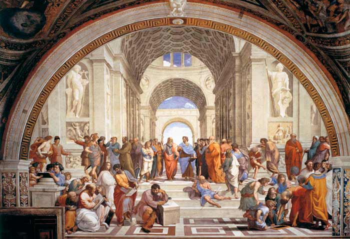

¿Qué es el arje?
Término griego (también transcrito como "arkhé" y como "arché") que viene a significar etimológicamente principio, fundamento, comienzo, y que fue utilizado por los primeros filósofos para referirse al elemento primordial del que está compuesta y/o del que deriva toda la realidad material.
Platón desarrolló sus doctrinas filosóficas mediante mitos y alegorías. En su "teoría de las formas" o "ideas", sostuvo que el mundo sensible es solo una "sombra" de otro más real, perfecto e inmutable del cual provienen los conceptos universales que estructuran la realidad a partir de la "Idea del Bien"; y el alma humana, la cual es inmortal pero esta se encuentra "encarcelada" en el cuerpo. Según su "teoría de la reminiscencia", las ideas son innatas en el alma y "recordadas" por la razón (anamnesis). Platón también es considerado como uno de los fundadores de la filosofía política al considerar que la ciudad justa estaría gobernada por "filósofos reyes". Intentó también plasmar en un Estado real su original teoría política, razón por la cual viajó dos veces a Siracusa, Sicilia, con intenciones de poner en práctica allí su proyecto, pero fracasó en ambas ocasiones y logró escapar penosamente y corriendo peligro su vida debido a las persecuciones que sufrió por parte de sus opositores. De Platón también recibimos los conceptos de “amor platónico” y "sólidos platónicos".
¿Quien fue Platón?
Fue un filósofo griego seguidor de Sócrates y maestro de Aristóteles.Platón nació hacia el año 427 a. C. en Atenas o en la isla de Egina, en el seno de una familia aristocrática ateniense.En 387 a. C. fundó la Academia de Atenas,institución que continuaría a lo largo de más de novecientos años y a la que Aristóteles acudiría desde Estagira a estudiar filosofía alrededor del 367 a. C., compartiendo unos veinte años de amistad y trabajo con su maestro.
Aportaciones de Platón:
La introducción de una novedosa forma para expresar las ideas filosóficas como lo fue el dialogo. Esta manera de hacerlo se convirtió en un nuevo elemento cultural para presentar, mediante discusiones y debates, las opiniones sobre temas controversiales de la época. Diferentes interlocutores debatían libremente obteniéndose un conocimiento. De este modo, se dejaron de lado las expresiones oraculares y poéticas y empezó a legitimarse el conocimiento basándose en la contraposición de las ideas. Ya no solo se cimentaba en la afirmación de alguien en particular como era habitual hacerlo.
La institucionalización de la filosofía, que se debió, en cierta forma, a Platón. Fue en su Academia donde se empezó a estudiar y debatir las distintas ideologías existentes.
Presentación de importantes teorías que han servido de punto de partida para entender y estudiar la realidad en la actualidad. Entre ellas la teoría de las ideas, la teoría del conocimiento la teoría ética. Igualmente su percepción sobre la psicología, el arte, el Estado y el gobernante ideal.

Temas
A diferencia de Sócrates, Platón escribió profusamente acerca de sus puntos de vista filosóficos, dejando un considerable número de manuscritos como legado.Su teoría más conocida es la de las Ideas o Formas. En ella se sostiene que todos los entes del mundo sensible son imperfectos y deficientes, y participan de otros entes, perfectos y autónomos (Ideas) de carácter ontológico muy superior y de los cuales son pálida copia, que no son perceptibles mediante los sentidos. Cada Idea es única e inmutable, mientras que, las cosas del mundo sensible son múltiples y cambiantes. La contraposición entre la realidad y el conocimiento es descrita por Platón en el célebre mito de la caverna, en la República. Para Platón, la única forma de acceder a la realidad inteligible era mediante la razón y el entendimiento; el papel de los sentidos queda relegado y se considera engañoso.
Otro tema que trató Platón profusamente fue la dicotomía entre el saber y la opinión,que anticipaba los debates más modernos entre empirismo y racionalismo,y que posteriormente trataron los postmodernistas y sus oponentes al argüir sobre la distinción entre objetivo y subjetivo.Es importante resaltar que la dicotomía entre un mundo inteligible y otro mundo sensible es más bien un recurso pedagógico que suele usarse para ilustrar la diferencia ontológica entre los entes inteligibles y los sensibles.
En las escrituras de Platón se pueden ver conceptos sobre las formas de gobierno, incluyendo la aristocracia como la ideal; así como la timocracia, la oligarquía, la democracia y la tiranía.Un tema central de su obra es el conflicto entre la naturaleza y las creencias de la época concernientes al rol de la herencia y del medio ambiente en el desarrollo de la personalidad y la inteligencia del hombre muchoantes que el debate sobre la naturaleza y la crianza del Hombre comenzara en la época de John Locke.
La filosofía griega conceptualiza al hombre como ciudadano (varón) de la polis. Mientras Aristóteles niega la existencia de las cualidades humanas más excelsas a esclavos y mujeres,Platón en el libro V de la República admite a las mujeres en la clase de los guardianes y al final del libro VII reconoce la posibilidad de que existan filósofas gobernantes, sin embargo esta admisión de las mujeres en las actividades masculinas solo estaría dictada —según analistas de su obra— por un criterio utilitarista, ya que el objetivo es eliminar lo privado. La actitud de Platón hacia las mujeres era ambivalente. En algunos de sus escritos defendía un trato más justo para las mujeres. Por otro lado, atribuyó la condición inferior de la mujer como una degeneración del hombre.